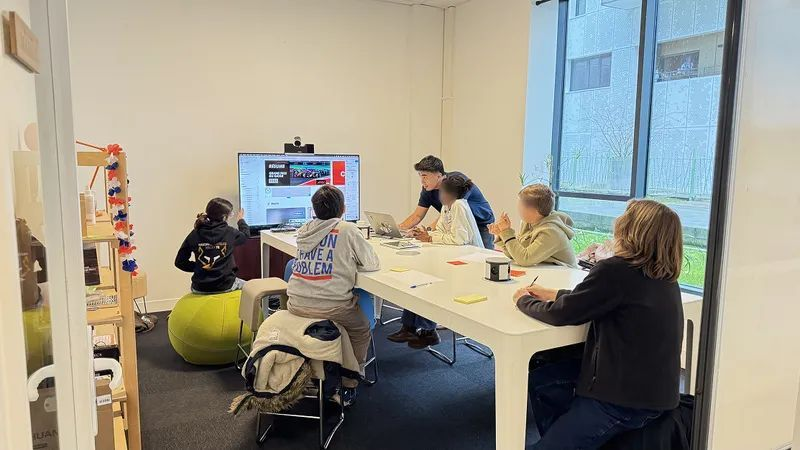
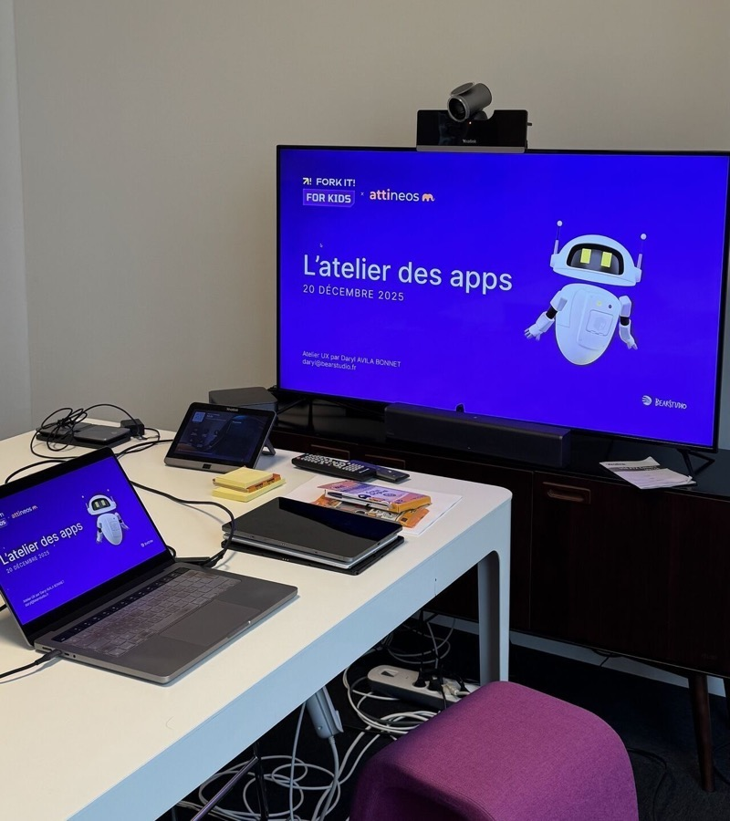
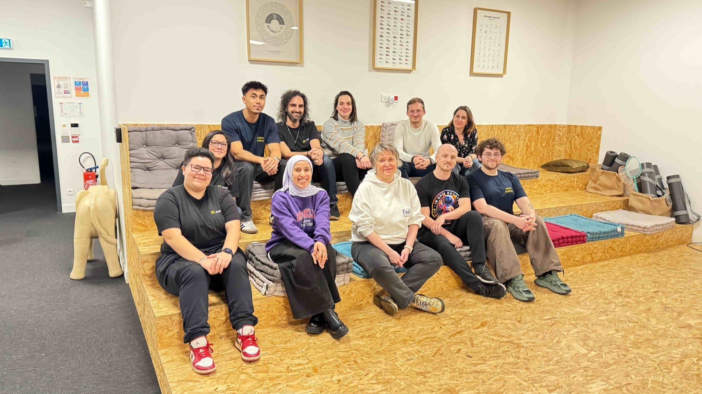

Fork it! est une communauté qui organise des événements tech, en France et à l'étranger. Parmi eux, Fork it! For Kids fait découvrir le numérique aux plus jeunes. C'est là que j'ai animé mon tout premier atelier, dans un rôle où je ne m'imaginais pas il y a encore un an.
Mon premier atelier, avec des enfants
Le 20 décembre 2025, j'ai animé mon tout premier atelier, à Fork it! For Kids à Rouen. Une après-midi pour faire découvrir le numérique autrement à des jeunes : du code, du design et des échanges avec des bénévoles.
C'était la deuxième édition de Fork it! For Kids, et il fallait trouver des intervenants. Je m'étais porté volontaire. J'étais arrivé chez BearStudio en septembre 2025, à peine trois mois plus tôt, et je me suis retrouvé directement dans le bain. Après avoir pas mal réfléchi à ce que je pouvais leur proposer, j'ai imaginé un atelier de design, « L'atelier des apps ». C'était la première fois que je portais un projet qui venait entièrement de moi.


Honnêtement, ça me faisait peur. Je n'avais jamais fait ça avant, je me demandais si j'étais légitime, et je ne me sentais pas vraiment prêt. Je ne pensais pas me retrouver un jour de l'autre côté.
Ils étaient cinq enfants autour de la table. On a fait des petits jeux, et j'ai dû adapter le déroulé en cours de route. Mais une fois lancé, j'ai adoré. Leur curiosité, leurs questions et leur enthousiasme étaient vraiment motivants. J'ai tout donné : les enfants sont repartis ravis, et les parents avaient l'air contents.
On n'est jamais vraiment prêt à se lancer. Il faut simplement oser.
Les organisateurs reviennent sur cette deuxième édition dans un article sur le site de Fork it! ↗

Ce que ça change dans mon travail de designer
Animer un atelier, c'est apprendre à se rendre compréhensible par n'importe qui, y compris des enfants. Une compétence que j'utilise ensuite tous les jours face aux clients et aux équipes.
Si quelque chose vous fait envie mais vous fait un peu peur, foncez. C'est souvent là que commencent les plus belles expériences.
Et ce n'est qu'un début. D'autres aventures avec Fork it! m'attendent, mais ça, ce sera pour un prochain article.